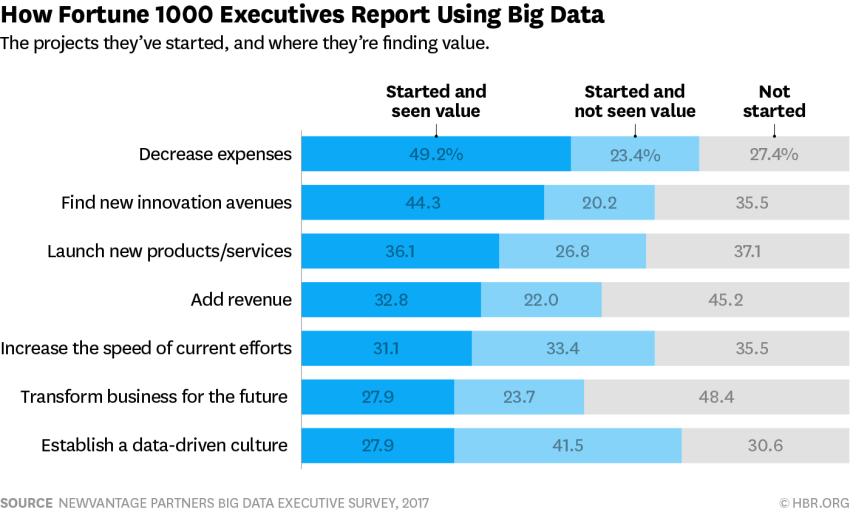

Applied Value Analytics
Global Premiere
Isaac Zhou
Agenda
- Opening pumps
- Current Issues with Big Data
- Applied Value Analytics Platform
- Platform Demo
- Next Steps
- Next App
- Vision
- Closing remarks
Opening
“Do not go where the path may lead, go instead where there is no path and leave a trial.”
— Ralph Waldo Emerson
Opening: Trailblazers & 4th Industrial Revolution

Current Issue with Big Data
Struggling Companies
- Most Companies are facing the following challenge
- Can't ask the right data questions
- Don't know where to find supporting data facts
- Incapable of conducting correct data analysis
- Unable to draw insightful data driven conclusions
- The biggest Challenge is the difficulty to form a data-driven culture
- Doing too much with too little outcomes

Struggling Data Scientists
- Data Scientists
- Extremely scarce and with extremely high ego
- Very few know how to communicate well with the business world
- Showing off
- Unnecessary complicated models that most people can't understand
- Artistically beautiful yet confusing visualizations that most people can't read
- Doing too much with too little outcomes
Focus, Simplicity and Speed Revisited
- Focus
- AVA starts with laser-focus on one thing
- Build one thing well first
- Simplicity
- Sophisticated models explained in plain Language
- Visualization only to support communication
- Speed
- AGILE
- Lean Growth to ensure fast reaction to changes
Applied Value Analytics Platform
Niche focus on Steel and Raw Material Commodities Markets
Process Automation
- Consolidation of Steel Data Sources
- Automated Data Downloads
- Data will be stored in all mainstream file formats
- Embedded Data Cleansing
- Centralized Repository in SQL Database
- Continuous Updates
Comprehensive Data Analysis
- Run exploratory statistical analysis to initially understand market dynamics
- Comprehensive and user-friendly analytics package
- Illustration of key stats (e.g. mean, standard deviation, correlation, confidence interval etc.)
- Built-in explanation
| Stat | Max | Mean | Min |
|---|---|---|---|
Machine Learning/Deep Learning Forecasts
- Advanced time series and machine learning models
- Update model parameters based on validations
- Take in expert human input to adjust parameters
- Simulate different “what-if?” scenarios
Forecasting
There are Four types of forecasting techniques
- OLS (Ordinary Least Square)
- Time Series Analysis
- Machine Learning / Deep Learning
- BLUFF
AV Forecasting Accuracy
How accurate are we in predicting steel prices?
| Period | AV HR | TSA HR | AV HDG | TSA HDG |
|---|---|---|---|---|
| 2017Q1 | 4.2% | 6.9% | 3% | 5.3% |
| 2017Q2 | 6.1% | 7% | 3.6% | 6.5% |
| 2017Q3 | 3.6% | 2.8% | 2.7% | 2.9% |
| 2017Q4 | 4.6% | 8.2% | 6.8% | 13.4% |
| 2018Q1 | 8.5% | 10.2% | 5.9% | 6.9% |
Visualization & Reports
A Competitor: Sisense
How about AVA?

Aphrodite!
Platform Demo
Next Steps
- Collect and Integrate Feedback
- Integrate User Management System
- Test and Package into a more polished Product
- Start Selling in June
Next App
Migrate AV World Class Steel Sourcing Tool from Excel to Cloud Based Webapp
Vision
- Digitalization
- Big Data
- Artificial Intelligence
Closing Remarks